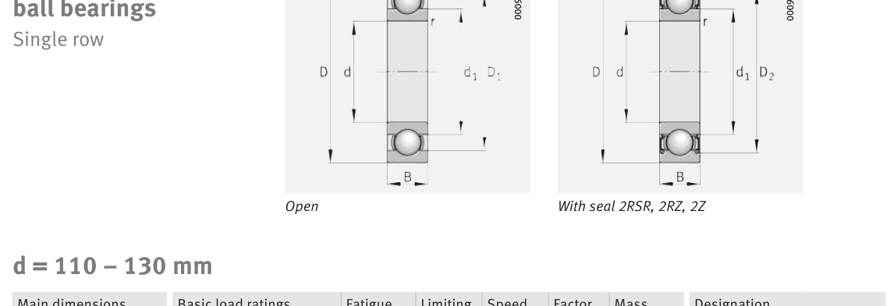

Original catalogue drawing - FAG Schaeffler HR 1, page 270

Scanned from the manufacturer catalogue page listing this part number. All part numbers printed on that table share the same drawing.
Scale cross-section
Blue = inner / outer ring, yellow = rolling element. Drawn to scale from this part's own
dimensions for selection reference only - not a manufacturing or assembly drawing.
Dimension table (mm / inch)
Symbol
Dimension
mm
inch
d
Bore diameter
110
4.3307
D
Outside diameter
170
6.6929
B
Inner-ring / bearing width
28
1.1024
r
Chamfer (min)
2
0.0787
Notes
Weights are given in kg. Load ratings are shown in both the original catalogue units and the converted value (1 N = 0.2248 lbf). Data is provided for selection reference only - confirm against the latest official catalogue before ordering.
Main dimensions
Bore d (mm)
110
Outside dia. D (mm)
170
Width B (mm)
28
Inner-ring OD d1 (mm)
128.7
Seal outside dia. D2 (mm)
155
Load ratings & speeds
Basic dynamic load rating Cr (lbs)
19109
Basic static load rating Cor (lbs)
15961
Basic dynamic load rating Cr (N)
85000
Basic static load rating C0r (N)
71000
Fatigue limit load Cur (N)
3450
Factor f0
15.7
Limiting speed nG (rpm)
4,550
Reference speed nB (rpm)
4,850
Weight
Weight (kg)
2.11
Mounting dimensions (fillets / shoulders)
Housing fillet r max (mm)
2
Shaft shoulder da (mm)
118.8
Housing shoulder Da (mm)
161.2
Housing fillet ra max (mm)
2
Bearing life (ISO 281 basic rating life)
C / P
Equivalent load P (N)
L10 (106 rev)
L10h at 1,500 rpm
4
21,250
64
711
6
14,167
216
2,400
8
10,625
512
5,689
10
8,500
1,000
11,111
15
5,667
3,375
37,500
Basic rating life per ISO 281: L10 = (C/P)3 with C = 85,000 N. Hours = L10 x 106 / (60n). Life-modification factors for lubrication, contamination and temperature (aISO) are not included.
Source & traceability
Brand
FAG
Source catalogue
FAG / Schaeffler Rolling Bearings HR 1
Catalogue page
p.270 (dimensions)
Load ratings in newtons, fatigue limit load Cur, limiting speed nG and reference speed nB.
Send us the quantity you need and we will come back with price and
lead time, normally within 24 hours. Equivalent parts from other brands can be quoted at the same time.